require(car)
require(MASS)
require(lme4)
require(hnp)
help("Ornstein")
data(Ornstein)
head(Ornstein) ## assets sector nation interlocks
## 1 147670 BNK CAN 87
## 2 133000 BNK CAN 107
## 3 113230 BNK CAN 94
## 4 85418 BNK CAN 48
## 5 75477 BNK CAN 66
## 6 40742 FIN CAN 69## assets sector nation interlocks
## Min. : 62 MIN :54 CAN:117 Min. : 0.00
## 1st Qu.: 519 MAN :48 OTH: 18 1st Qu.: 3.00
## Median : 1397 AGR :47 UK : 17 Median : 9.00
## Mean : 5978 FIN :22 US : 96 Mean : 13.58
## 3rd Qu.: 4326 MER :20 3rd Qu.: 18.00
## Max. :147670 WOD :19 Max. :107.00
## (Other):38Variáveis: assets: ativos da corporação (em milhões de dolares);
sector: setor de operação (AGR: agriculture; TRN: transportes; MIN: mineração, metais,…
nation: CAN: Canadá; UK: Reino Unido; US: Estados Unidos; OTH: outro.
interlocks: Número de diretores e executivos compartilhados com outras companhias.
Objetivo: modelar interlocks em função das demais variáveis.
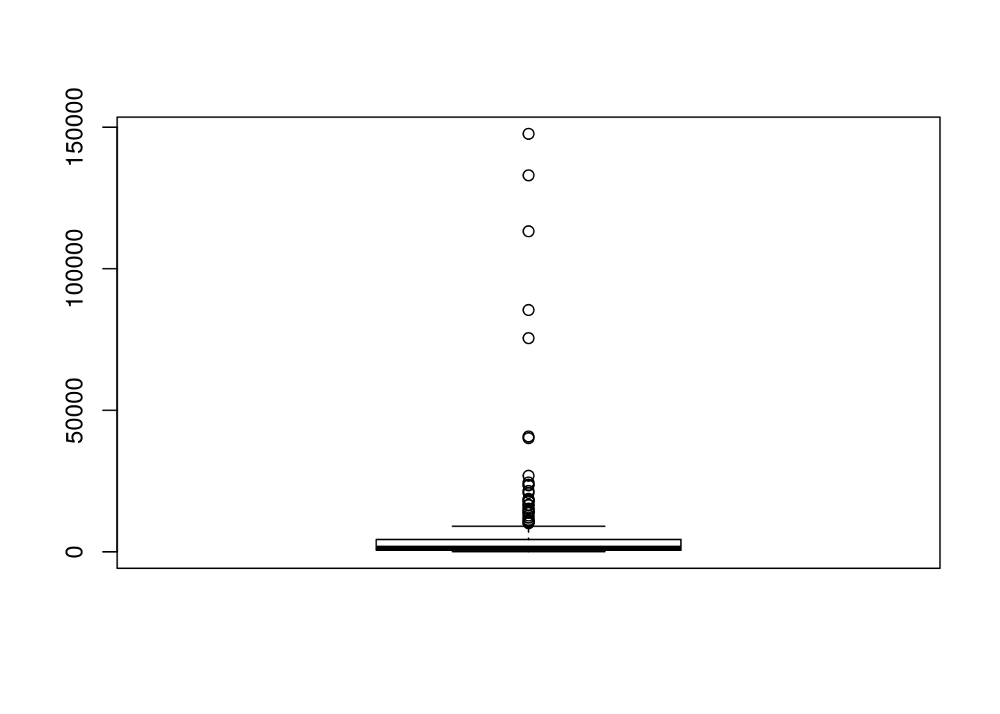
Distribuição dos ativos extremamente assimétrica, com algumas companhias bastante discrepantes (superiores, em relação aos ativos) em relação às demais.
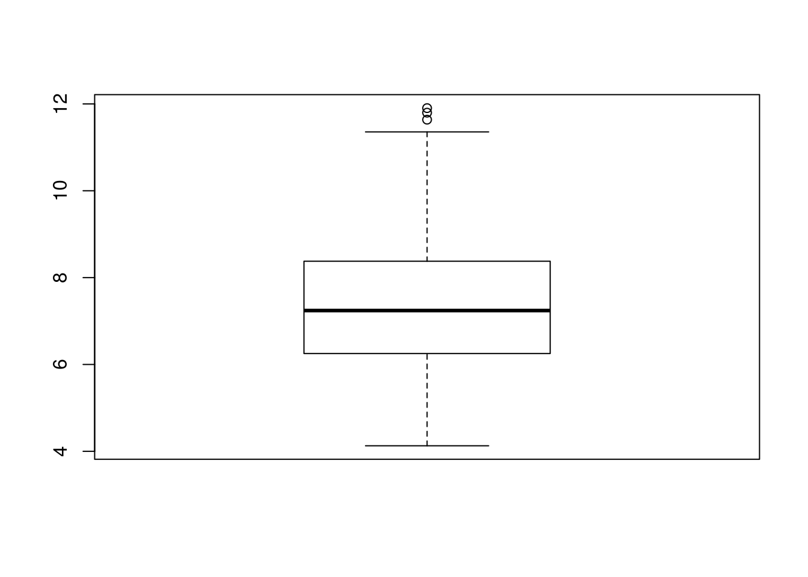
Utilizar o logaritmo simetriza a distribuição dos ativos. Com base nisso, vamos usar log(assets) no modelo.
plot(log(Ornstein$assets),Ornstein$interlocks,pch=20,
ylab='Número de diretores compartilhados',xlab='Ativos (em milhões de dolares)')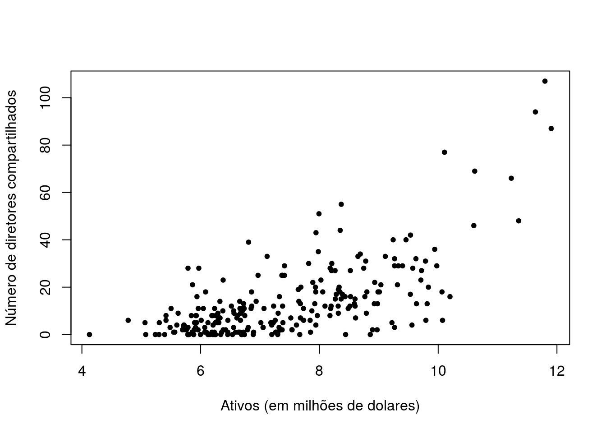
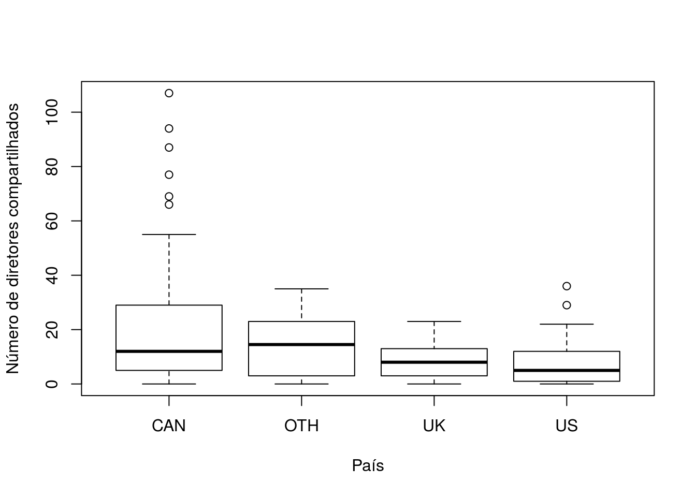
boxplot(Ornstein$interlocks~Ornstein$sector,xlab='Setor',
ylab='Número de diretores compartilhados')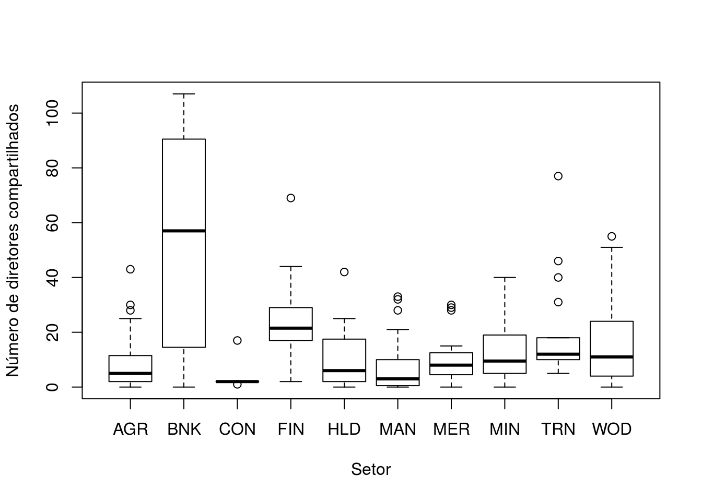
Vamos tentar um modelo com erros normais.
ajuste0 <- lm(interlocks ~ log(assets) + nation + sector, data=Ornstein)
par(mfrow=c(2,2))
plot(ajuste0) # Bah.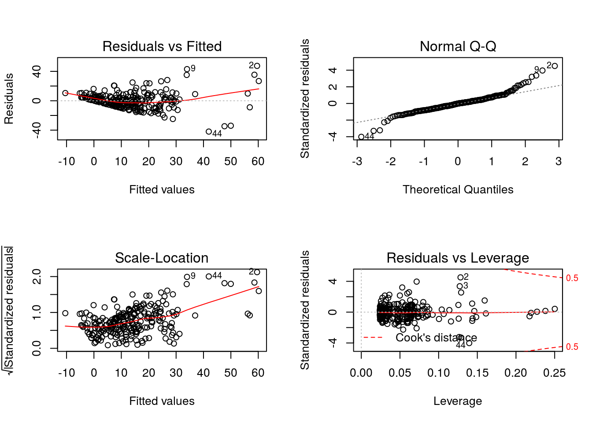
ajuste1 <- glm(interlocks~log(assets)+nation+sector, family=poisson, data=Ornstein)
summary(ajuste1) ##
## Call:
## glm(formula = interlocks ~ log(assets) + nation + sector, family = poisson,
## data = Ornstein)
##
## Deviance Residuals:
## Min 1Q Median 3Q Max
## -6.7111 -2.3159 -0.4595 1.2824 6.2849
##
## Coefficients:
## Estimate Std. Error z value Pr(>|z|)
## (Intercept) -0.83938 0.13664 -6.143 8.09e-10 ***
## log(assets) 0.45145 0.01698 26.585 < 2e-16 ***
## nationOTH -0.10699 0.07438 -1.438 0.150301
## nationUK -0.38722 0.08951 -4.326 1.52e-05 ***
## nationUS -0.77239 0.04963 -15.562 < 2e-16 ***
## sectorBNK -0.16651 0.09575 -1.739 0.082036 .
## sectorCON -0.48928 0.21320 -2.295 0.021736 *
## sectorFIN -0.11161 0.07571 -1.474 0.140457
## sectorHLD -0.01491 0.11924 -0.125 0.900508
## sectorMAN 0.12187 0.07614 1.600 0.109489
## sectorMER 0.06157 0.08670 0.710 0.477601
## sectorMIN 0.24985 0.06888 3.627 0.000286 ***
## sectorTRN 0.15181 0.07893 1.923 0.054453 .
## sectorWOD 0.49825 0.07560 6.590 4.39e-11 ***
## ---
## Signif. codes: 0 '***' 0.001 '**' 0.01 '*' 0.05 '.' 0.1 ' ' 1
##
## (Dispersion parameter for poisson family taken to be 1)
##
## Null deviance: 3737.0 on 247 degrees of freedom
## Residual deviance: 1547.1 on 234 degrees of freedom
## AIC: 2473.1
##
## Number of Fisher Scoring iterations: 5Repare que a deviance residual excede muito o respectivo número de graus de liberdade (1547>>>234). Este é um indicativo de falta de ajuste.
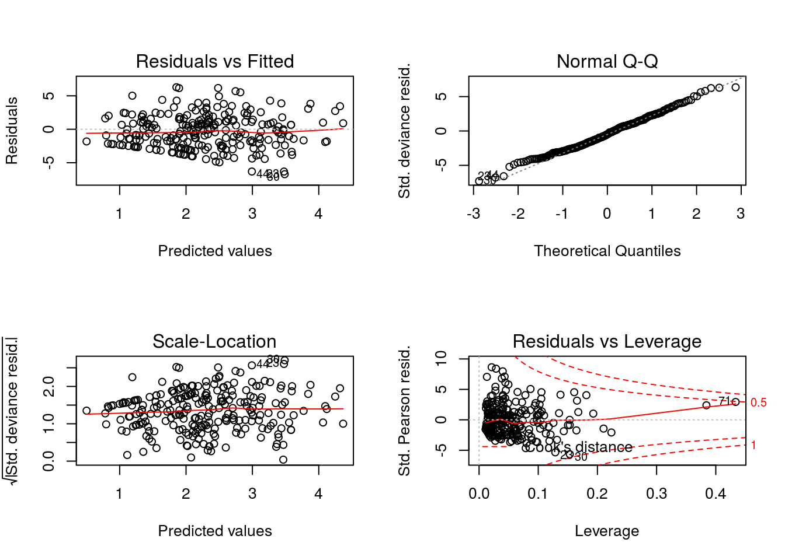
Atentem para a escala dos resíduos, com valores acima de 5 e abaixo de -5!!!
## Poisson model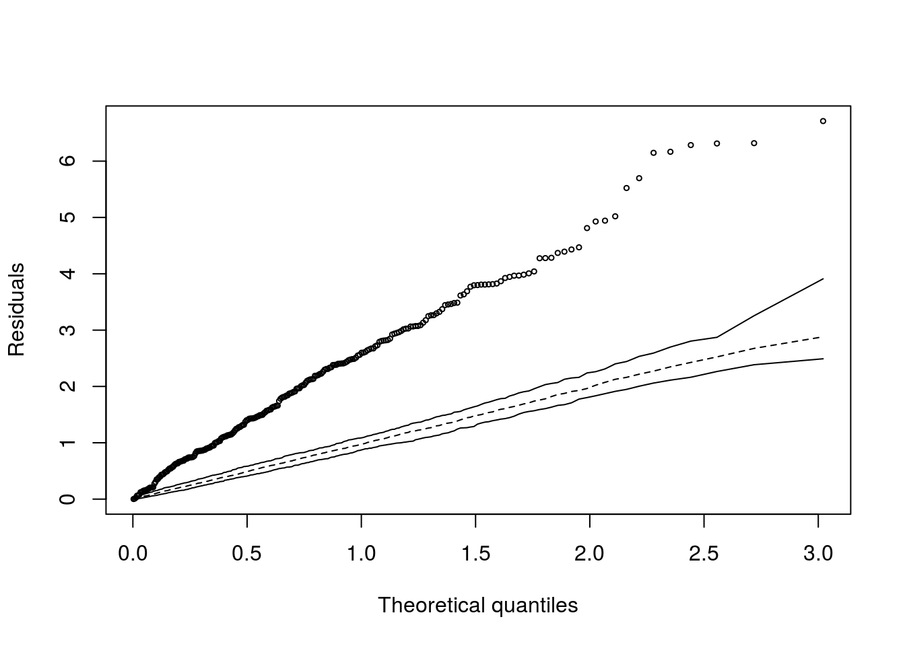
Estimando o parâmetro de dispersão com base na estatística X2 de Pearson:
## [1] 6.798396##
## Call:
## glm(formula = interlocks ~ log(assets) + nation + sector, family = poisson,
## data = Ornstein)
##
## Deviance Residuals:
## Min 1Q Median 3Q Max
## -6.7111 -2.3159 -0.4595 1.2824 6.2849
##
## Coefficients:
## Estimate Std. Error z value Pr(>|z|)
## (Intercept) -0.83938 0.35626 -2.356 0.0185 *
## log(assets) 0.45145 0.04428 10.196 < 2e-16 ***
## nationOTH -0.10699 0.19394 -0.552 0.5812
## nationUK -0.38722 0.23338 -1.659 0.0971 .
## nationUS -0.77239 0.12941 -5.968 2.4e-09 ***
## sectorBNK -0.16651 0.24966 -0.667 0.5048
## sectorCON -0.48928 0.55589 -0.880 0.3788
## sectorFIN -0.11161 0.19741 -0.565 0.5718
## sectorHLD -0.01491 0.31091 -0.048 0.9618
## sectorMAN 0.12187 0.19853 0.614 0.5393
## sectorMER 0.06157 0.22607 0.272 0.7853
## sectorMIN 0.24985 0.17960 1.391 0.1642
## sectorTRN 0.15181 0.20581 0.738 0.4608
## sectorWOD 0.49825 0.19713 2.528 0.0115 *
## ---
## Signif. codes: 0 '***' 0.001 '**' 0.01 '*' 0.05 '.' 0.1 ' ' 1
##
## (Dispersion parameter for poisson family taken to be 6.798396)
##
## Null deviance: 3737.0 on 247 degrees of freedom
## Residual deviance: 1547.1 on 234 degrees of freedom
## AIC: 2473.1
##
## Number of Fisher Scoring iterations: 5Perceba que os erros padrões estão corrigidos (multiplicados pela \(\sqrt{\phi}\)).
Já corresponde aos resultados de um modelo quase poisson.
## [1] 2.607373Como alternativa, vamos ajustar um modelo de regressão com mesma estrutura, mas distribuição binomial negativa.
##
## Call:
## glm.nb(formula = interlocks ~ log(assets) + nation + sector,
## data = Ornstein, init.theta = 1.639034209, link = log)
##
## Deviance Residuals:
## Min 1Q Median 3Q Max
## -2.8087 -0.9897 -0.1886 0.4301 2.4080
##
## Coefficients:
## Estimate Std. Error z value Pr(>|z|)
## (Intercept) -0.82535 0.37976 -2.173 0.0298 *
## log(assets) 0.45618 0.05185 8.799 < 2e-16 ***
## nationOTH -0.10455 0.23004 -0.454 0.6495
## nationUK -0.38945 0.23575 -1.652 0.0985 .
## nationUS -0.78820 0.13201 -5.971 2.36e-09 ***
## sectorBNK -0.40846 0.37726 -1.083 0.2789
## sectorCON -0.75698 0.45711 -1.656 0.0977 .
## sectorFIN -0.10346 0.25181 -0.411 0.6812
## sectorHLD -0.21103 0.34982 -0.603 0.5463
## sectorMAN 0.07677 0.18601 0.413 0.6798
## sectorMER 0.07761 0.23246 0.334 0.7385
## sectorMIN 0.23988 0.18837 1.273 0.2029
## sectorTRN 0.10133 0.24752 0.409 0.6823
## sectorWOD 0.39084 0.23253 1.681 0.0928 .
## ---
## Signif. codes: 0 '***' 0.001 '**' 0.01 '*' 0.05 '.' 0.1 ' ' 1
##
## (Dispersion parameter for Negative Binomial(1.639) family taken to be 1)
##
## Null deviance: 521.58 on 247 degrees of freedom
## Residual deviance: 296.52 on 234 degrees of freedom
## AIC: 1675.3
##
## Number of Fisher Scoring iterations: 1
##
##
## Theta: 1.639
## Std. Err.: 0.192
##
## 2 x log-likelihood: -1645.257Repare que o valor da deviance residual, nesse caso, é bem mais próximo do respectivo número de graus de liberdade.
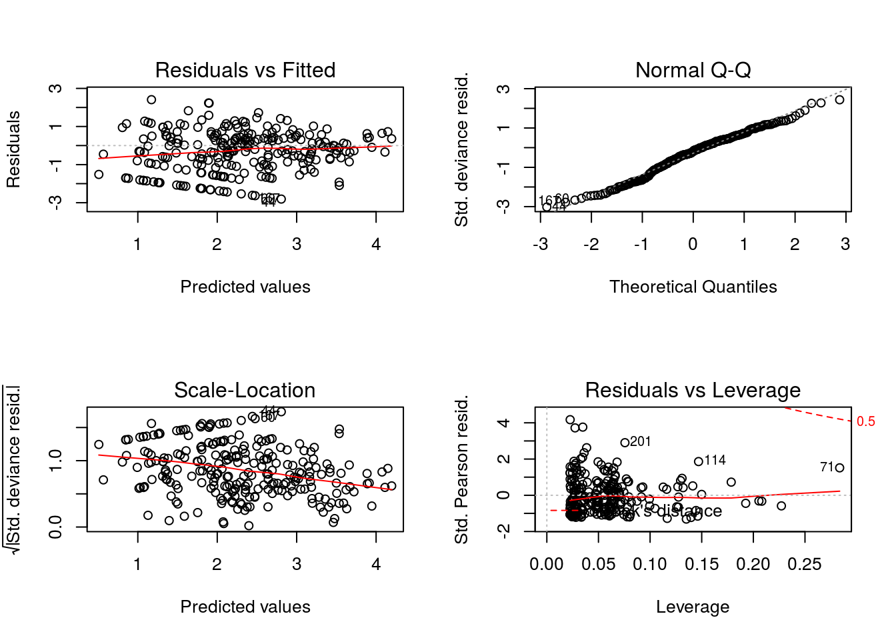
## Negative binomial model (using MASS package)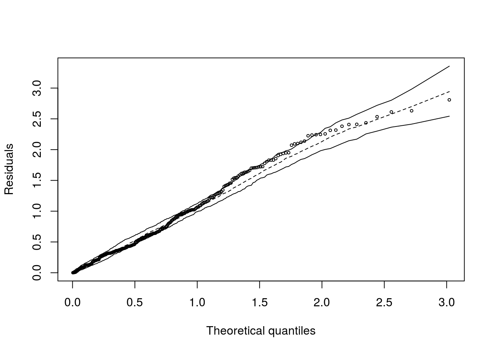
Vamos comparar os modelos Poisson e binomial negativa por meio dos AICs:
## df AIC
## ajuste1 14 2473.102
## ajuste2 15 1675.257O modelo com melhor ajuste (menor AIC) é o binomial negativo. Vamos seguir com ele.
## Calls:
## 1: glm(formula = interlocks ~ log(assets) + nation + sector, family =
## poisson, data = Ornstein)
## 2: glm.nb(formula = interlocks ~ log(assets) + nation + sector, data =
## Ornstein, init.theta = 1.639034209, link = log)
##
## Model 1 Model 2
## (Intercept) -0.839 -0.825
## SE 0.137 0.380
##
## log(assets) 0.4514 0.4562
## SE 0.0170 0.0518
##
## nationOTH -0.1070 -0.1045
## SE 0.0744 0.2300
##
## nationUK -0.3872 -0.3894
## SE 0.0895 0.2357
##
## nationUS -0.7724 -0.7882
## SE 0.0496 0.1320
##
## sectorBNK -0.1665 -0.4085
## SE 0.0958 0.3773
##
## sectorCON -0.489 -0.757
## SE 0.213 0.457
##
## sectorFIN -0.1116 -0.1035
## SE 0.0757 0.2518
##
## sectorHLD -0.0149 -0.2110
## SE 0.1192 0.3498
##
## sectorMAN 0.1219 0.0768
## SE 0.0761 0.1860
##
## sectorMER 0.0616 0.0776
## SE 0.0867 0.2325
##
## sectorMIN 0.2498 0.2399
## SE 0.0689 0.1884
##
## sectorTRN 0.1518 0.1013
## SE 0.0789 0.2475
##
## sectorWOD 0.4983 0.3908
## SE 0.0756 0.2325
## Observe a diferença dos erros padrões produzidos pelos ajustes dos modelos Poisson e binomial negativo. Os erros produzidos pela Poisson estão subestimados.
## Waiting for profiling to be done...## 2.5 % 97.5 %
## (Intercept) -1.108508434 -0.57287676
## log(assets) 0.418217514 0.48478568
## nationOTH -0.254554747 0.03710951
## nationUK -0.566365221 -0.21525523
## nationUS -0.870179363 -0.67559428
## sectorBNK -0.354010813 0.02137266
## sectorCON -0.933489962 -0.09406728
## sectorFIN -0.259604188 0.03725116
## sectorHLD -0.254585771 0.21343143
## sectorMAN -0.027718678 0.27087687
## sectorMER -0.109959569 0.23012202
## sectorMIN 0.115403223 0.38547023
## sectorTRN -0.003165433 0.30635642
## sectorWOD 0.349651988 0.64614536## Waiting for profiling to be done...## 2.5 % 97.5 %
## (Intercept) -1.57345115 -0.07816512
## log(assets) 0.35372210 0.56005140
## nationOTH -0.55543403 0.37449051
## nationUK -0.83720228 0.08676612
## nationUS -1.04218086 -0.53384772
## sectorBNK -1.16565968 0.39066048
## sectorCON -1.62097710 0.18292301
## sectorFIN -0.59221831 0.39460298
## sectorHLD -0.86401193 0.51798451
## sectorMAN -0.28770113 0.44182697
## sectorMER -0.37170403 0.54437543
## sectorMIN -0.12641357 0.60429312
## sectorTRN -0.37999614 0.60160690
## sectorWOD -0.05717997 0.85862294Os intervalos de confiança baseados na Poisson são excessivamente precisos, comprometendo a taxa de cobertura.
## Analysis of Deviance Table (Type II tests)
##
## Response: interlocks
## LR Chisq Df Pr(>Chisq)
## log(assets) 78.366 1 < 2.2e-16 ***
## nation 38.030 3 2.786e-08 ***
## sector 12.026 9 0.2118
## ---
## Signif. codes: 0 '***' 0.001 '**' 0.01 '*' 0.05 '.' 0.1 ' ' 1Pelo resultado do teste, o efeito de setor é não significativo (quando o número de diretores é ajustado por país e ativos). Vamos eliminar essa variável do modelo.
##
## Call:
## glm.nb(formula = interlocks ~ log(assets) + nation, data = Ornstein,
## init.theta = 1.537032922, link = log)
##
## Deviance Residuals:
## Min 1Q Median 3Q Max
## -2.9616 -1.0596 -0.1868 0.4241 2.1976
##
## Coefficients:
## Estimate Std. Error z value Pr(>|z|)
## (Intercept) -0.55007 0.31546 -1.744 0.0812 .
## log(assets) 0.42611 0.03898 10.930 < 2e-16 ***
## nationOTH -0.06947 0.21704 -0.320 0.7489
## nationUK -0.30001 0.23184 -1.294 0.1957
## nationUS -0.72060 0.12395 -5.814 6.11e-09 ***
## ---
## Signif. codes: 0 '***' 0.001 '**' 0.01 '*' 0.05 '.' 0.1 ' ' 1
##
## (Dispersion parameter for Negative Binomial(1.537) family taken to be 1)
##
## Null deviance: 496.89 on 247 degrees of freedom
## Residual deviance: 295.52 on 243 degrees of freedom
## AIC: 1669
##
## Number of Fisher Scoring iterations: 1
##
##
## Theta: 1.537
## Std. Err.: 0.176
##
## 2 x log-likelihood: -1656.968O resumo do ajuste indica maior frequência de diretores de empresas norte-americanas em relação às canadenses (referência). Além disso, a frequência (média) de diretores aumenta conforme os ativos da empresa.
Vamos testar a igualdade da frequência média de diretores das empresas que não são norte-americanas.
Ornstein$IndicaUSA <- factor(ifelse(Ornstein$nation=='US','USA','NãoUSA'))
ajuste4 <- glm.nb(interlocks ~ log(assets)+IndicaUSA,Ornstein)Agora, vamos testar a restição imposta comparando os modelos 3 e 4.
## Likelihood ratio tests of Negative Binomial Models
##
## Response: interlocks
## Model theta Resid. df 2 x log-lik. Test df
## 1 log(assets) + IndicaUSA 1.523329 245 -1658.593
## 2 log(assets) + nation 1.537033 243 -1656.968 1 vs 2 2
## LR stat. Pr(Chi)
## 1
## 2 1.625682 0.443596##
## Call:
## glm.nb(formula = interlocks ~ log(assets) + IndicaUSA, data = Ornstein,
## init.theta = 1.523329307, link = log)
##
## Deviance Residuals:
## Min 1Q Median 3Q Max
## -2.9387 -1.0369 -0.1637 0.4179 2.2142
##
## Coefficients:
## Estimate Std. Error z value Pr(>|z|)
## (Intercept) -0.63978 0.30517 -2.096 0.036 *
## log(assets) 0.43300 0.03861 11.215 < 2e-16 ***
## IndicaUSAUSA -0.68155 0.11777 -5.787 7.16e-09 ***
## ---
## Signif. codes: 0 '***' 0.001 '**' 0.01 '*' 0.05 '.' 0.1 ' ' 1
##
## (Dispersion parameter for Negative Binomial(1.5233) family taken to be 1)
##
## Null deviance: 493.53 on 247 degrees of freedom
## Residual deviance: 295.35 on 245 degrees of freedom
## AIC: 1666.6
##
## Number of Fisher Scoring iterations: 1
##
##
## Theta: 1.523
## Std. Err.: 0.174
##
## 2 x log-likelihood: -1658.593A frequência de diretores compartilhados é inferior nos Estados Unidos em relação às demais localidades estudadas. Estima-se que o número médio de diretores compartilhados nos EUA seja aproximadamente a metade, em relação às demais localidades (exp(-0,68)).
Vamos ajustar um modelo por quasi-verossimilhança, definido pela função de ligação logaritmica e função de variância \(V(\mu)=\phi\mu.\)
ajuste6 <- glm(interlocks ~ log(assets)+IndicaUSA,family=quasi(link='log',variance='mu'),Ornstein)
summary(ajuste6)##
## Call:
## glm(formula = interlocks ~ log(assets) + IndicaUSA, family = quasi(link = "log",
## variance = "mu"), data = Ornstein)
##
## Deviance Residuals:
## Min 1Q Median 3Q Max
## -6.9034 -2.3786 -0.4741 1.4291 6.8949
##
## Coefficients:
## Estimate Std. Error t value Pr(>|t|)
## (Intercept) -0.53533 0.23987 -2.232 0.0265 *
## log(assets) 0.41849 0.02686 15.581 < 2e-16 ***
## IndicaUSAUSA -0.65209 0.11316 -5.763 2.48e-08 ***
## ---
## Signif. codes: 0 '***' 0.001 '**' 0.01 '*' 0.05 '.' 0.1 ' ' 1
##
## (Dispersion parameter for quasi family taken to be 6.620681)
##
## Null deviance: 3737.0 on 247 degrees of freedom
## Residual deviance: 1659.9 on 245 degrees of freedom
## AIC: NA
##
## Number of Fisher Scoring iterations: 5Vamos tentar extrair a logverossimilhança maximizada para esse modelo:
## 'log Lik.' NA (df=3)## Analysis of Deviance Table (Type II tests)
##
## Response: interlocks
## LR Chisq Df Pr(>Chisq)
## log(assets) 231.931 1 < 2.2e-16 ***
## IndicaUSA 36.965 1 1.203e-09 ***
## ---
## Signif. codes: 0 '***' 0.001 '**' 0.01 '*' 0.05 '.' 0.1 ' ' 1e na diferença entre funções quasi-desvio para modelos encaixados que, segundo McCullagh(1983), funciona como o teste da razão de verossimilhanças.
Modelo de poisson com preditor semelhante aos modelos binomial negativo e de quase-verossimilhança.
ajuste8 <- glm(interlocks ~ log(assets)+IndicaUSA,family=quasi(link='log',variance='mu^2'),Ornstein) O ajuste8 também corresponde a um modelo de quase verossimilhança, mas com função de variância quadrática (v(mu) = phi*mu^2).
Vamos comparar os ajustes dos modelos com distribuição de Poisson, binomial nehativa e por quasi verossimilhança.
## Calls:
## 1: glm(formula = interlocks ~ log(assets) + IndicaUSA, family =
## poisson, data = Ornstein)
## 2: glm.nb(formula = interlocks ~ log(assets) + IndicaUSA, data =
## Ornstein, init.theta = 1.523329307, link = log)
## 3: glm(formula = interlocks ~ log(assets) + IndicaUSA, family =
## quasi(link = "log", variance = "mu"), data = Ornstein)
## 4: glm(formula = interlocks ~ log(assets) + IndicaUSA, family =
## quasi(link = "log", variance = "mu^2"), data = Ornstein)
##
## Model 1 Model 2 Model 3 Model 4
## (Intercept) -0.5353 -0.6398 -0.5353 -0.6764
## SE 0.0932 0.3052 0.2399 0.2977
##
## log(assets) 0.4185 0.4330 0.4185 0.4380
## SE 0.0104 0.0386 0.0269 0.0381
##
## IndicaUSAUSA -0.652 -0.682 -0.652 -0.689
## SE 0.044 0.118 0.113 0.113
## Gráficos de resíduos de Pearson vs valores ajustados para os modelos quasi-poisson (ajuste6) e Poisson (ajuste7). Repare na escala dos resíduos.
par(mfrow=c(1,2),las=1)
plot(fitted(ajuste6),rstudent(ajuste6,type='pearson'),xlab='Preditor ajustado',
ylab='Resíduo padronizado de Pearson',main='Modelo quasi Poisson')
plot(fitted(ajuste7),rstudent(ajuste7,type='pearson'),xlab='Preditor ajustado',
ylab='Resíduo padronizado de Pearson',main='Modelo Poisson')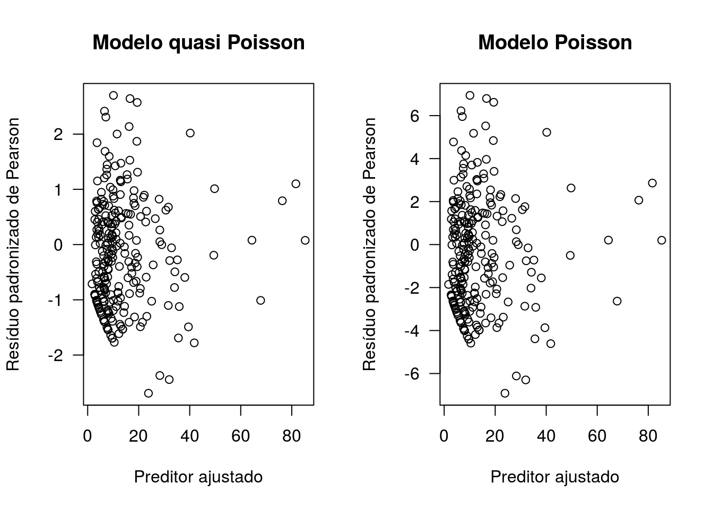
Um pouco mais de diagnóstico:
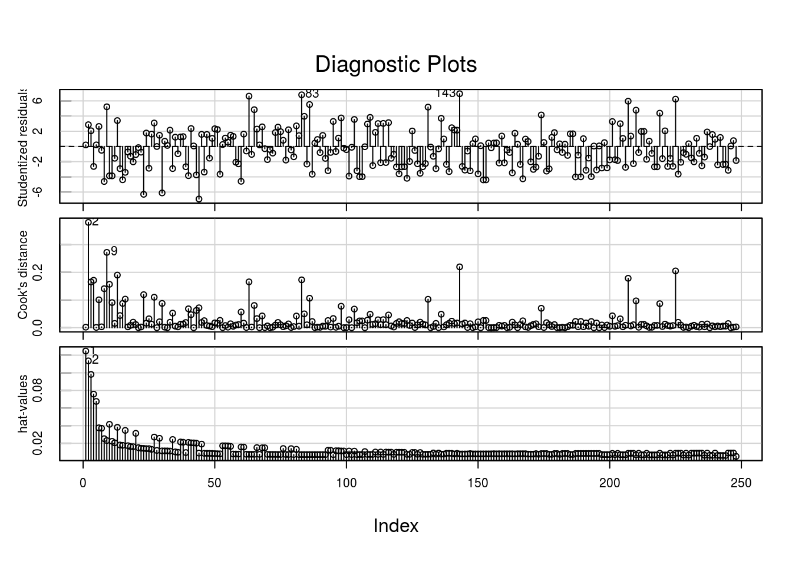
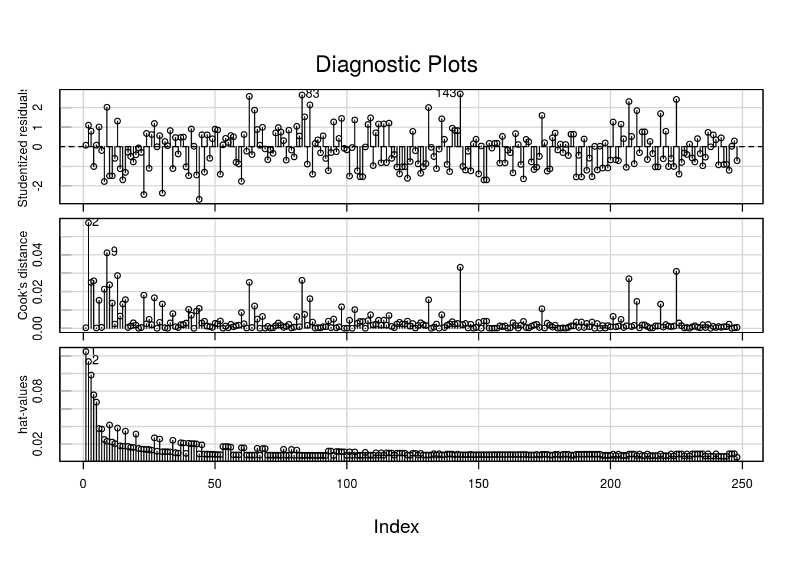
Pode-se observar menor, novamnet, redução na escala dos resíduos e valores consideravelmente menores para as distâncias de Cook para o ajuste6.
Vamos explorar o efeito da quantidade de ativos.
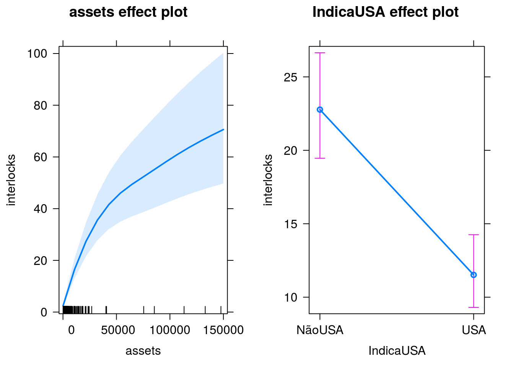
E se usarmos o modelo Poisson com estimação por Bootstrap?
Observe que usando bootstrap (NÃO PARAMÉTRICO) também contornamos o problema da superdispersão, com erros padrões próximos aos obtidos usando quase verossimilhança e a distribuição binomial negativa.
## Bootstrap bca confidence intervals
##
## 2.5 % 97.5 %
## (Intercept) -0.9722124 -0.02243248
## log(assets) 0.3625008 0.46612668
## IndicaUSAUSA -0.8939350 -0.45466283## 2.5 % 97.5 %
## (Intercept) -1.0054652 -0.06519063
## log(assets) 0.3658453 0.47112958
## IndicaUSAUSA -0.8738815 -0.43030087## 2.5 % 97.5 %
## (Intercept) -0.7180426 -0.3526133
## log(assets) 0.3980285 0.4389463
## IndicaUSAUSA -0.7382880 -0.5658944Os ICs baseados no MLG são incorretamete precisos, em relação aos demais. Ver estudo de simulação em arquivo a parte.
Agora, vamos ajustar o modelo quase poisson com estimação robusta dos erros padrões (estimador sanduíche). Para isso, vamos usar a biblioteca geepack.
require(geepack)
Ornstein$Subj <- 1:nrow(Ornstein)
ajuste9 <- geeglm(interlocks ~ log(assets) + IndicaUSA, family = 'poisson', id = Subj, data=Ornstein)
summary(ajuste9)##
## Call:
## geeglm(formula = interlocks ~ log(assets) + IndicaUSA, family = "poisson",
## data = Ornstein, id = Subj)
##
## Coefficients:
## Estimate Std.err Wald Pr(>|W|)
## (Intercept) -0.53533 0.23760 5.076 0.0243 *
## log(assets) 0.41849 0.02567 265.723 < 2e-16 ***
## IndicaUSAUSA -0.65209 0.10561 38.123 6.64e-10 ***
## ---
## Signif. codes: 0 '***' 0.001 '**' 0.01 '*' 0.05 '.' 0.1 ' ' 1
##
## Estimated Scale Parameters:
## Estimate Std.err
## (Intercept) 6.541 0.6662
##
## Correlation: Structure = independenceNumber of clusters: 248 Maximum cluster size: 1